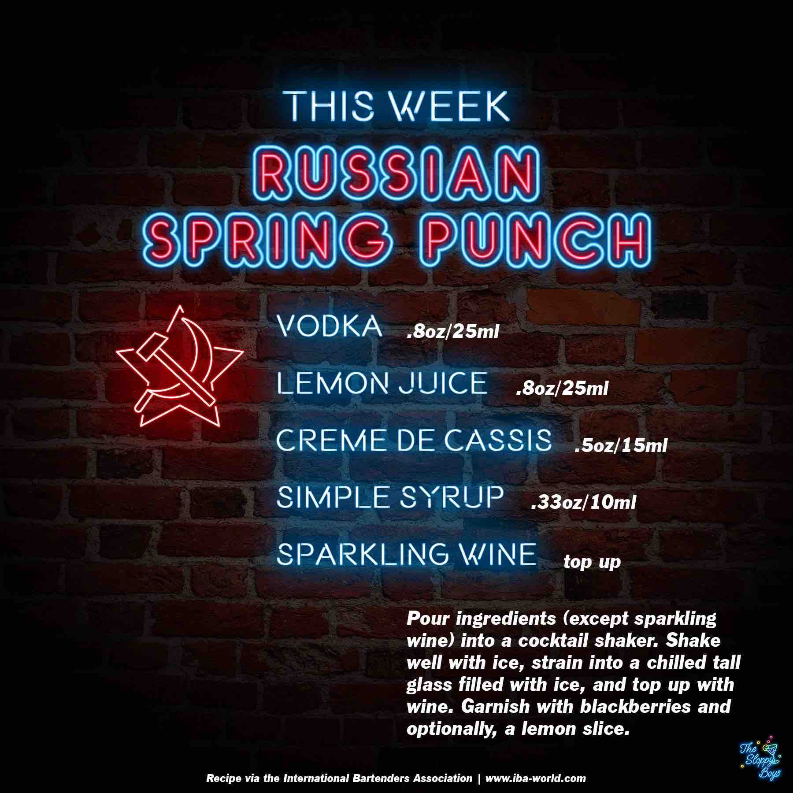

Russian Spring Punch
Ingredients
- Vodka (.8oz/25ml)
- Lemon Juice (.8oz/25ml)
- Creme de Cassis (.5oz/15ml)
- Simple Syrup (.33oz/10ml)
- Sparkling Wine (top up)
Steps
- Pour ingredients (except sparkling wine) into a cocktail shaker.
- Shake well with ice, strain into a chilled tall glass filled with ice, and top up with wine.
- Garnish with blackberries and optionally, a lemon slice.
Notes